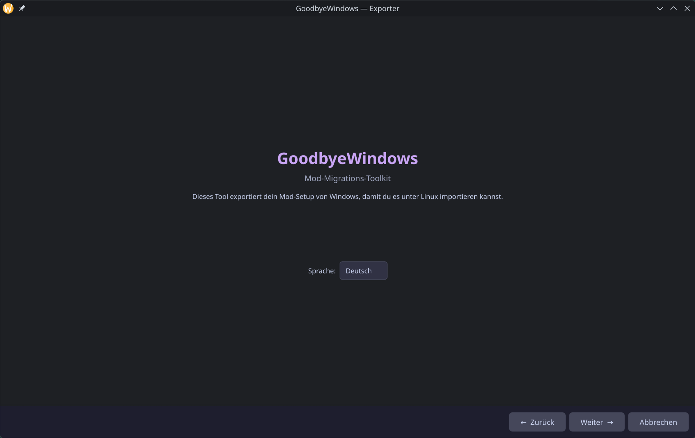
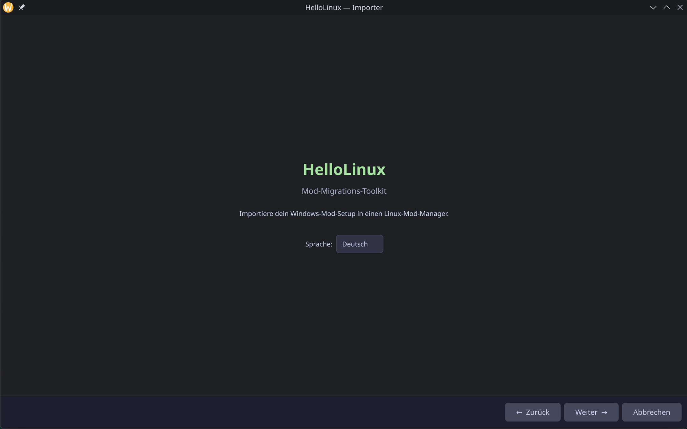

Move your entire mod setup from Windows to Linux. No re-downloading, no starting over. Your mods, your load order, your profiles — everything comes with you.
Run this tool on your Windows PC. It scans for MO2 instances automatically — Registry, AppData, common install paths. Select what you want to export and choose how to transfer.

Run this on your Linux PC. Import from a USB drive, scan your Windows partition (dual-boot), or receive mods directly over your local network. Everything gets converted to Anvil Organizer format.

Run GoodbyeWindows. It finds your MO2 setup and exports everything — mods, load order, profiles, Nexus IDs.
USB drive, external disk, or direct LAN transfer with PIN. Your choice.
Run HelloLinux. Select source, preview your mods, import into Anvil Organizer. Done.
Migration tested and supported for 19+ games. More coming.